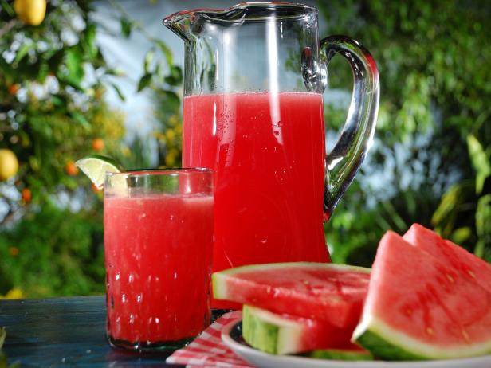

Watermelon agua fresca!

Description
This drink is a simple combination of fresh
watermelon, sugar, lime juice and water that
gets blended together for a sweet and refreshing
complement to the bold flavors of the dip.
Ingredients
- 4 cups cubed seeded watermelon
- ½ cup water
- ½ cup white sugar, or to taste
- 4 slices lime
- 24 fresh mint leaves
- ice
Steps
- Puree the watermelon and water in a blender until smooth.
- Add sugar to taste.
- Cut the lime slices in half.
- Place a half lime slice into each of 8 glasses along with 3 mint leaves.
- Crush with a cocktail muddler, then fill each glass with ice.
- Pour in the watermelon agua fresca, and stir before serving.